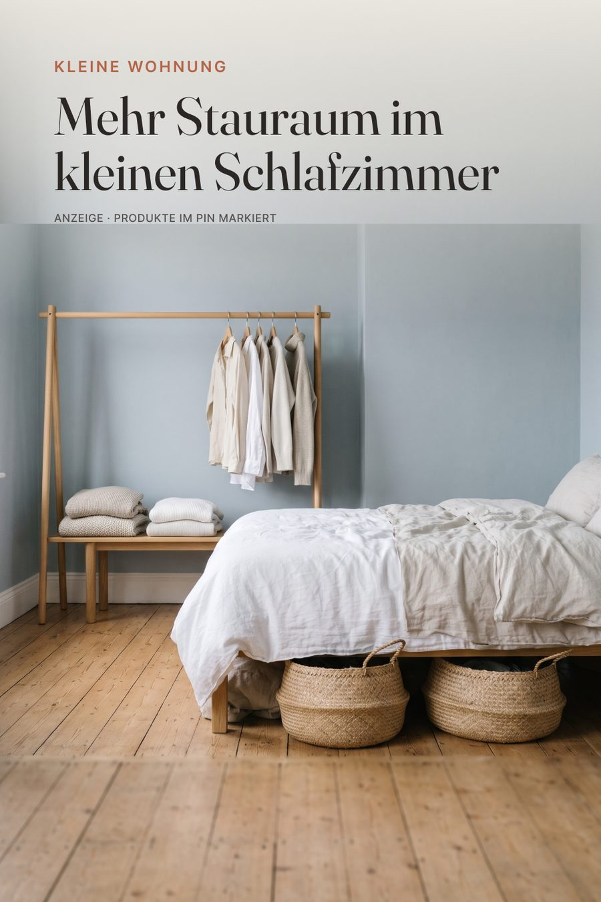

Stauraum · Look zum Nachshoppen
Mehr Stauraum im kleinen Schlafzimmer
Kleines Schlafzimmer clever nutzen: Kleiderstange aus Holz, Bank mit Strick und Körbe unter dem Bett. Stauraum-Ideen für die Mietwohnung.

KI-generiertes Stimmungsbild – die Produkte unten sind passende Alternativen.
Shop the LookDie Produkte zum Look
Mit * markierte Links sind Affiliate-Links zu Amazon.
- Bei Amazon ansehen*Kleiderstange freistehend Holz, schlichtunho Kleiderständer aus Bambus, auf Rollen, 2 Stangen
Alternative: VASAGLE Kleiderständer mit 2 Ablagen* - Bei Amazon ansehen*Schmale Sitzbank HolzKrok Wood Sitzbank Tomas, Massivholz Eiche, 100x35 cm
Alternative: Bambus Sitzbank, Lamellen-Holzbank* - Bei Amazon ansehen*Seegras-/Rattankörbe flach, unter das BettDecorasian Korb geflochten aus Wasserhyazinthe
Alternative: Aufbewahrungskörbe aus Seegras mit Deckel* - Bei Amazon ansehen*Kleiderbügel Holz, SetSONGMICS Kleiderbügel Massivholz, 20er-Set
Alternative: OGIVO Kleiderbügel Holz 20er-Set, Natur* - Bei Amazon ansehen*Strickdecke/Plaid cremeLonghui Bedding Grobstrick-Decke, Creme, 150 cm
Alternative: WONGS BEDDING Kuscheldecke flauschig, 150x200, Beige* - Bei Amazon ansehen*Bettwäsche Leinen sand/naturLeinen-Bettwäsche-Set 100% Leinen, stonewashed, Naturfarben
Alternative: Bettwäsche 135x200, 4-tlg., Leinen-Optik*